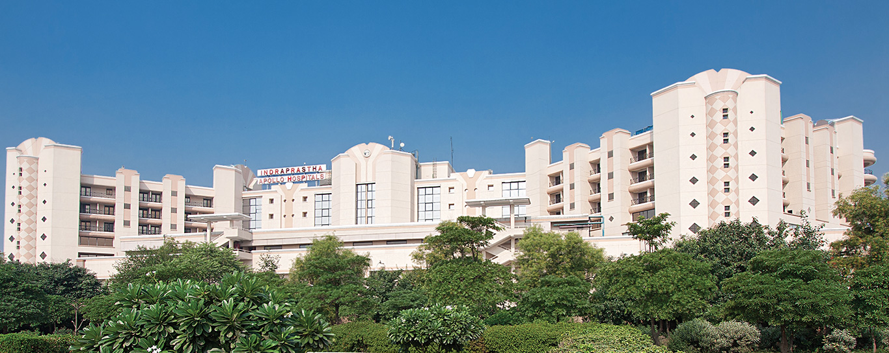

What to Do If You Have Been Diagnosed with Lung Cancer?
Steps to Take If Diagnosed with Lung Cancer
- 1. Consult with Medical Professionals: Seek advice from oncologists and specialists to understand your diagnosis and treatment options.
- 2. Understand Your Treatment Plan: Work closely with your healthcare team to understand your treatment plan, potential side effects, and expected outcomes.
- 3. Stay Informed: Educate yourself about lung cancer, treatment advancements, and support resources available to you.
- 4. Lean on Support: Connect with family, friends, and support groups to receive emotional and practical support.
- 5. Consider Second Opinions: It's okay to seek second opinions to ensure you're making informed decisions about your treatment.
- 6. Manage Symptoms: Discuss symptom management strategies with your healthcare team to improve your quality of life.
- 7. Make Lifestyle Changes: Adopt a healthy lifestyle to support your overall well-being during treatment.
- 8. Stay Positive: Maintain a positive mindset and seek ways to find joy and meaning in your life.
- 9. Advocate for Yourself: Take an active role in your treatment decisions and communicate your preferences with your healthcare team.
- 10. Seek Professional Help: Consider seeking counseling or therapy to cope with the emotional challenges of a cancer diagnosis.
Remember that every individual's journey is unique. Surround yourself with a strong support network and focus on taking one step at a time as you navigate through your lung cancer diagnosis and treatment.
Recommended Hospital for Lung Cancer Treatment
Indraprastha Apollo Hospital New Delhi

Address: Indraprastha Apollo Hospital, NH-19, New Delhi, Delhi 110076
Contact: 011 7179 1090
Location on Google Maps
View the location on Google Maps below: